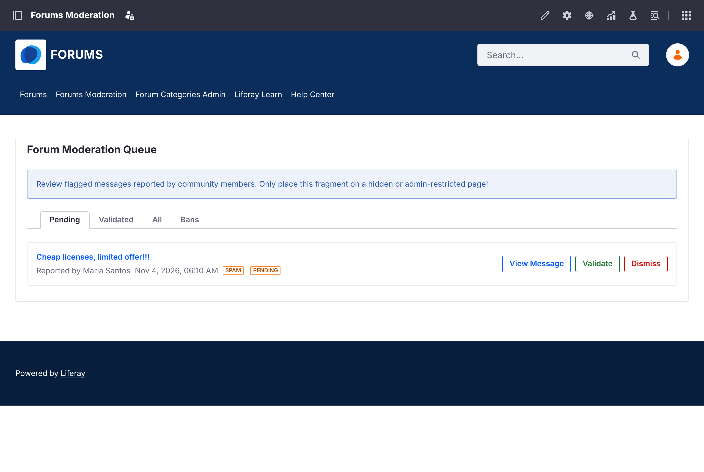
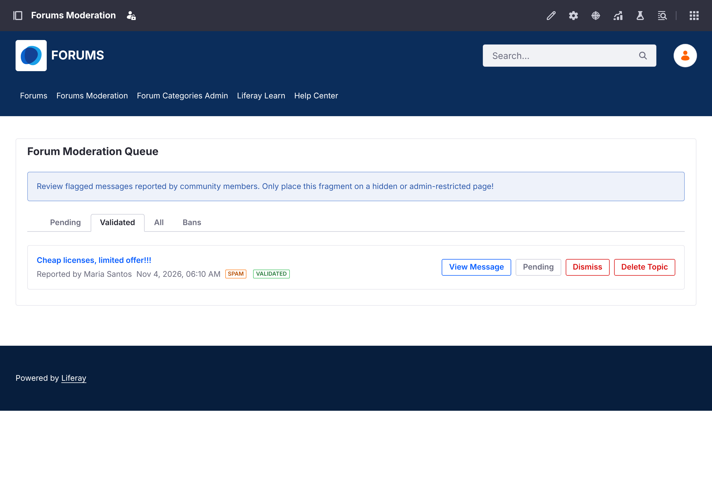

Reviewing Reports
When members report a topic, the report appears in the moderation queue.
The Moderation Queue#
Open Forums Moderation in the forum's navigation. The Forum Moderation Queue has four tabs:
| Tab | Shows |
|---|---|
| Pending | New reports to review |
| Validated | Reports a moderator confirmed |
| All | Every report |
| Bans | Members banned on this site |
Each report shows the topic, who reported it, when, and the reason.

Acting on a Report#
- View Message opens the topic so you can read it in context.
- Validate confirms the report. All other pending reports on the same topic are validated too. The topic gets the Flagged badge and a notice that it was flagged as inappropriate.
- Dismiss deletes the report and keeps the topic as it is.
A validated report offers more actions:
- Pending moves the report back to Pending, if it was validated by mistake.
- Ban Author bans the topic's author from this site. See Banning Members.
- Delete Topic deletes the topic with all its replies, reports, and subscriptions.

Warning
Deleting a topic can't be undone.